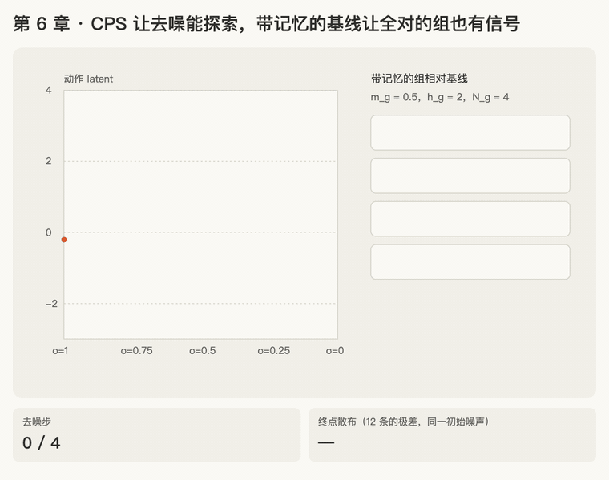

第 6 章 · RL 后训练：让会做的事做得更稳
本章回答：监督微调后接触类任务只有 40–76%，GR00T 2 怎么用强化学习推到 88–98%？一个"确定性去噪"的生成模型怎么探索、怎么算策略梯度？没有真机时能不能在世界模型里练？
讲解日期：2026-11-15 · 上一章：第 5 章 X-Adapt · 下一章：第 7 章 Agentic
对应原文：materials/text/gr00t2-whitepaper.txt§3.3 L530–L576；§4.1 L904–L952；§4.5.3 L1382–L1400；附录 F.1 L5108–L5330（式 10–18）、F.2 L5326–L5410、F.5 L5627 起
本章缩写：RL = Reinforcement Learning（强化 / 学习）；SFT = Supervised Fine-Tuning（监督 / 微调）；GRPO = Group Relative Policy Optimization（组 / 相对 / 策略 / 优化）；PPO = Proximal Policy Optimization（近端 / 策略 / 优化）；CPS = Coefficients-Preserving Sampling（系数 / 保持 / 采样）；DPPO = Diffusion Policy Policy Optimization（扩散策略的 / 策略 / 优化）；MDP = Markov Decision Process（马尔可夫 / 决策 / 过程）；SAC = Soft Actor-Critic（软 / 演员-评论家）；EMA = Exponential Moving Average（指数 / 滑动 / 平均）；pp = percentage points（百分点）。全部缩写见 附录 · 缩写与术语表
讲解
第一步：确定性去噪怎么"探索"——CPS（2026-11-15）
类比：让一个一直走同一条路的人，偶尔随机拐一下。 平时 GR00T 2 去噪是确定的（给定初始噪声，结果固定），像每天走同一条路；RL 需要它"试试别的走法"，才知道哪条更好。CPS 就是在每一步去噪时，往动作里加一点受控的随机，而视频去噪不动。
公式（附录 F 式 10、11，L5130–L5165）。第 \(k\) 次去噪事件，当前动作 latent \(a^{(k)}\)，模型速度 \(v\)，噪声水平 \(\sigma_k\)（从 \(\sigma_0=1\) 降到 \(\sigma_4=0\)）：
| 符号 | 读法 | 意思 |
|---|---|---|
| \(\eta\) | "eta" | 探索强度旋钮：\(\eta=0\) 时 \(\sin=0\)，无噪声，退回确定性去噪 |
| \(\cos^2+\sin^2=1\) | — | "系数保持"：确定部分和随机部分的总方差和原来的 \(\sigma_{k+1}^2\) 一样，所以不会把 latent 的尺度弄乱 |
| \(s_{\min},s_{\max}\) | — | 标准差的上下限（\(s_{\min}>0\) 保证密度可算） |
每一步是一个显式高斯，于是可以算 \(\log\pi_\theta\)，做策略梯度——把去噪链当成一个多步 MDP，这是 DPPO 的思路（L5120–L5123）。噪声只加在被执行的前 \(H_e\) 个动作上（L5160–L5162）。
例子（编的一维数）。 \(a^{(k)}=0.5\)，\(\sigma_k=0.5\)，\(\sigma_{k+1}=0.25\)，\(v=-3\)，\(\eta=0.5\)（\(\cos45°=\sin45°\approx0.707\)）：
| 量 | 计算 | 值 |
|---|---|---|
| \(\hat a_{\text{data}}\) | \(0.5-0.5\times(-3)\) | 2.0 |
| \(\hat\epsilon\) | \(0.5+0.5\times(-3)\) | −1.0 |
| \(\mu\) | \(0.75\times2+0.25\times0.707\times(-1)\) | ≈ 1.323 |
| \(s_k\) | \(0.25\times0.707\) | ≈ 0.177 |
下一步动作 latent \(\sim\mathcal N(1.323,\,0.177^2)\)；若 \(\eta=0\)，就是确定的 \(0.75\times2+0.25\times(-1)=1.25\)。
一句话：CPS 只在动作去噪里注入总方差不变的高斯噪声，换来可探索、可算概率的策略。
第二步：带记忆的组相对优势（2026-11-15）
类比：考试打分不只和同桌比，也和自己以前比。 一组同学全部满分，组内比较人人"0 分进步"；但如果这道题你过去只有一半时候做对，这次全对就该被表扬。
公式（附录 F.1.1，L5193–L5205）。一个"重置上下文" \(g\)（任务 + 场景布局）跑 \(N_g\) 次，第 \(i\) 次回报 \(R_{g,i}\in\{0,1\}\)，历史均值 \(m_g\)，掺 \(h_g\) 个值为 \(m_g\) 的伪回报：
再用 PPO 式截断目标更新（式 15，L5242）：\(\mathcal J=\mathbb E\big[\min(r\hat A,\ \text{clip}(r,1-\epsilon_{\text{clip}},1+\epsilon_{\text{clip}})\hat A)\big]\)，\(r=\exp(\ell_\theta-\ell_{\text{old}})\) 是单个转移的似然比，不跨去噪事件连乘；每个 minibatch 只算一个 joint 事件（\(k=0\) 和 \(k=2\) 轮流），携带的 latent 截断梯度（L5246–L5252）。
例子（编的数）。 \(m_g=0.5\)，\(h_g=2\)，\(N_g=4\)，本轮回报 \([1,1,1,0]\)。看第 1 次（\(R=1\)）：
第 4 次（\(R=0\)）：\(b=(1+3)/5=0.8\)，\(A=-0.8\)。成功被鼓励、失败被压制，和普通 leave-one-out 一样；区别在全对或全错的组也有非零优势。
这个配方是 AI 找到的（AutoRL，附录 F.2，Fig. 47）：研究代理在 RoboCasa365 上自主迭代约 35 天；每轮分析失败 → 提出至多 4 个正交假设（每个带预期和证伪标准）→ 批评者过滤 → 分支实现、集群训练评测 → 超过阈值才晋级，每轮最多晋级 1 个（L5390–L5410）。Fig. 47 上的里程碑依次包括：权重锚定、组相对优势、复合任务用进度回报、按初始场景和种子分组、用 EMA 维护所有历史组的表（就是上面的 \(m_g\)）、长任务优势加权 1.5、按阶段的回合内信用分配。
一句话：基线里掺"这个场景以前的平均成绩"，全对全错的组也有学习信号；这个改法是自动研究代理 35 天找出来的。
第三步：三条路线和一个"梦里练"（2026-11-15）
类比：练球的三种办法。 ① 直接改动作（GRPO 改模型本身）；② 只看自己进球的录像再模仿一遍（自模仿）；③ 不改原来的动作，加一个小教练在旁边微调（残差 RL）。还有第四种：在脑子里模拟比赛（神经仿真）。
| 路线 | 改不改 GR00T 2 | 怎么做 | 原文 |
|---|---|---|---|
| GRPO | 改 | CPS 探索 + 带记忆基线 + PPO 截断 | 式 15 |
| GRPO 诱导自模仿 | 改 | 收集最佳 GRPO checkpoint 的成功 rollout \(\mathcal D_{\text{succ}}\)，从同一个 SFT 起点用原始视频+动作 loss 微调一轮：\(\mathcal L_{SI}=\lambda_v\mathcal L_{\text{video}}+\lambda_a\mathcal L_{\text{action}}\) | 式 16，L5254–L5270 |
| 残差 RL | 不改（冻结） | 小的 tanh 高斯演员在指定阶段输出有界修正，累积成偏移叠到 GR00T 2 的末端目标上；SAC 训练，一半数据来自演示，含零残差先验 | 式 17–18，L5279–L5325 |
| 神经仿真 RL | 改 | DreamDojo 世界模型代替真机：GR00T 2 出动作块 → 世界模型出多视角下一帧 → 当成下一个观测；奖励来自小型视频成功分类器（稀疏奖励） | §4.5.3、F.5 |
真机结果（Fig. 5，每柱 50 次，95% Wilson 区间）：
| 任务 | SFT | 残差 RL | GRPO | GRPO 自模仿 |
|---|---|---|---|---|
| 固定管件 | 66 | 76 | 86 | 88 |
| 手指放置 | 58 | 84 | 72 | 98 |
| 网线插入 | 76 | 82 | 92 | 94 |
| 充电器插入 | 40 | 70 | 94 | 96 |
（数字按 Fig. 5 柱顶标签读出，正文给的汇总是"88 / 98 / 94 / 96，SFT 40–76%"，L539–L540。）
神经仿真的数字（§4.5.3）：DreamDojo 先在 YAM 8,310 条四视角 episode（约 226.8 h，含失败和恢复）+ DROID 57,773 条（约 273 h）上 mid-train，多视角拼成一张画布一起预测；再用每任务几百条成功/失败 rollout 适配。世界模型里 RL 后，在真机上测：4 个任务平均 43% → 72%；RoboLab 10 任务 51% → 71%。
为什么用稀疏奖励：稠密进度分标注贵，而且会被策略钻空子（L1404–L1405）。
一句话：GRPO 负责探索出成功，自模仿把成功稳稳地学回来（效果最好），残差 RL 不碰底模型，世界模型让"练"不占真机。
动画演示：CPS 让去噪能探索，带记忆的基线让全对的组也有信号

可交互版：animations/06-cps-grpo.html（▶ 播放、→ 单步、↺ 从头开始；探索强度 η 滑块（0–1））
怎么看： 1. 左图 12 条轨迹从同一个初始噪声出发；η = 0 时完全重合（确定性去噪没法探索），η 越大越散（第一步）。 2. 右边逐次算讲义第二步的例子：b = 0.6 / 0.8，A = +0.4 / −0.8，最后对比"全成功"时普通 GRPO 与带记忆基线（第二步）。
练习与作答记录
题 1（第一步 CPS）：在第一步例子里取 \(\eta=1\)（\(\cos90°=0\)，\(\sin90°=1\)），\(\mu\) 和 \(s_k\) 各是多少？这时"确定部分"还剩什么？
作答：（待作答）
题 2（第二步 基线）：\(m_g=0.3\)，\(h_g=2\)，\(N_g=4\)，本轮 4 次全部失败。任一次的基线和优势是多少？和普通 GRPO（只用组内）比有什么不同？
作答：（待作答）
题 3（第三步 路线选择）：如果一个任务已经 90% 成功、只在最后对准插孔那 1 秒出错，你会选 GRPO、自模仿还是残差 RL？说出理由。
作答：（待作答）
口诀
只给动作加点噪，方差不变好算概；
基线掺进老成绩，全对全错也有梯；
探出成功再模仿，残差小修不动底，梦里练完真机测。
本章复习卡片
G13、G14（练习做完后，按答错、卡住的地方再补。）
附录 · 延伸阅读
推荐阅读
| 读什么 | 读哪里 | 读它为了什么 |
|---|---|---|
| ★ GR00T 2 白皮书 | 附录 F.1.1 L5108–L5278 | CPS、优势、PPO 目标、自模仿 |
| ★ GR00T 2 白皮书 | 附录 F.2 L5326 起、Fig. 47 | AutoRL 怎么自动做算法研究 |
| GR00T 2 白皮书 | 附录 F.3 | 在线 RL 基础设施（Tab. 18 每轮耗时） |
| GR00T 2 白皮书 | 附录 F.5 L5627 起 | DreamDojo 世界模型 RL |
cs285-deep-rl 讲义 |
PPO、策略梯度章 | 截断目标和优势函数 |
| DPPO（Ren et al., 2025）、CPS（Wang & Yu, 2025）、GRPO（Shao et al., 2024）、HIL-SERL（Luo et al., 2025） | 全文（待下载） | 原论文 |
数学原理
- 策略梯度需要可算的 \(\log\pi\)：确定性采样没有密度，加高斯转移后每步密度显式。
- 方差保持：\(\cos^2(\eta\pi/2)+\sin^2(\eta\pi/2)=1\) 让噪声部分的总方差保持 \(\sigma_{k+1}^2\)。
- Leave-one-out 基线：用"除自己以外"的回报做基线，保证无偏；掺伪回报相当于加一个先验，有偏但方差更小。
- PPO 截断：限制新旧策略的似然比在 \([1-\epsilon,1+\epsilon]\)，防止一步走太远。
公式清单
| 公式 | 出处 |
|---|---|
| \(\hat a_{\text{data}}=a^{(k)}-\sigma_kv\)，\(\hat\epsilon=a^{(k)}+(1-\sigma_k)v\) | 式 (10) |
| \(\mu=(1-\sigma_{k+1})\hat a_{\text{data}}+\sigma_{k+1}\cos(\eta\pi/2)\hat\epsilon\)，\(s_k=\text{clip}(\sigma_{k+1}\sin(\eta\pi/2),s_{\min},s_{\max})\) | 式 (11) |
| \(b_{g,i}=\frac{h_gm_g+\sum_{j\ne i}R_{g,j}}{h_g+N_g-1}\)，\(A=R-b\) | F.1.1 |
| \(\mathcal J=\mathbb E[\min(r\hat A,\text{clip}(r,1\pm\epsilon)\hat A)]\) | 式 (15) |
| \(\mathcal L_{SI}=\lambda_v\mathcal L_{\text{video}}(\mathcal D_{\text{succ}})+\lambda_a\mathcal L_{\text{action}}(\mathcal D_{\text{succ}})\) | 式 (16) |
| \(o_{j+1}=\text{clip}(o_j+\gamma\delta a_j,-B,B)\)，\(x^{\text{cmd}}=x^{\text{GR00T 2}}\oplus o\) | 式 (17) |
代码对照
本章暂无代码对照：G2-M3（CPS + 带记忆 GRPO 玩具实现）完成后补 ch06_rl_post_training.py。